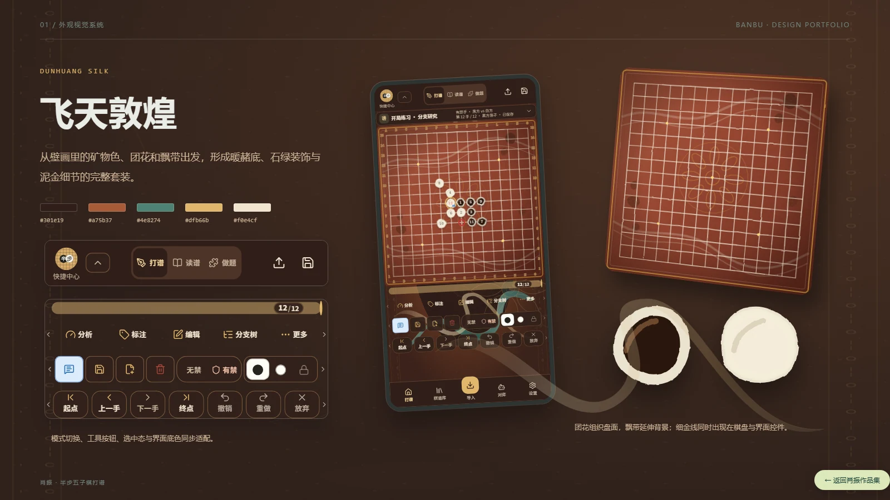
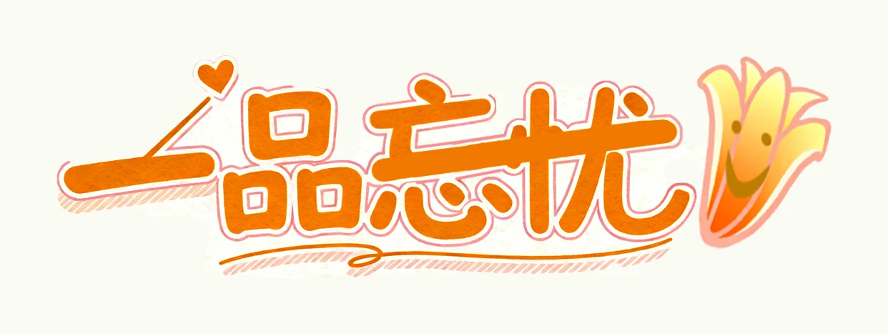

研究与梳理
梳理受众、主题与信息层级，借助 AI 辅助资料整理、创意发散与文案推敲。
主题梳理 / 概念提炼VISUAL DESIGN · AI-ASSISTED CREATION
我是肖振，工艺美术专业设计者。
关注 UI/UX、品牌视觉、AI 漫剧与文化文创，使用 AI 辅助研究、探索和实现。

01 / UI·UX 与产品
03 / 品牌视觉CHOOSE A DIRECTION / 作品方向
按类型快速浏览。
PROJECTS / 全部项目
按类型浏览。
向下滚动可连续浏览全部项目；点击任意项目进入完整说明和图片。
HOW I CREATE / 创作方式
AI 辅助探索，设计判断与交付由我负责。
梳理受众、主题与信息层级，借助 AI 辅助资料整理、创意发散与文案推敲。
主题梳理 / 概念提炼把关键词转化为视觉方案，探索构图、色彩、角色和场景，比较不同方向的表达效果。
视觉探索 / 图像生成结合 Figma、Photoshop 等设计工具处理界面、图像与版式，关注风格一致性、信息可读性和最终呈现。
筛选整合 / 排版与修正Photoshop · Figma · GPT · Image 2.5 · Nano Banana 2.1 · ComfyUI · Midjourney · 可灵
A LITTLE ABOUT ME
肖振 / 长沙师范学院 · 工艺美术本科
关注 UI/UX、品牌策划、AI 漫剧与文创产品设计。从真实使用反馈，到文化元素的提取与转译，我希望用 AI 协助探索方案，并通过自己的设计判断把概念组织成完整体验。
CONTACT / 联系
求职方向：UI/UX · 视觉设计 · 品牌设计 · AI 漫剧与 AIGC
2026 年 11 月上旬起可到岗，每周 4—5 天，可连续实习 6 个月以上。